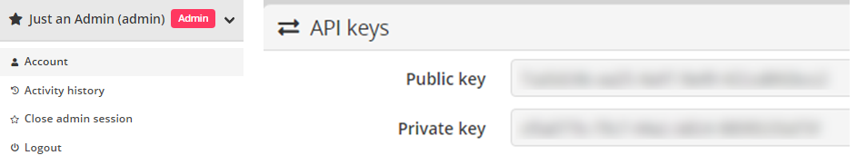
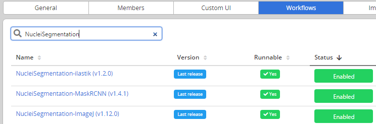
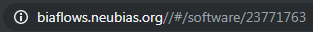
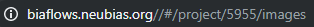
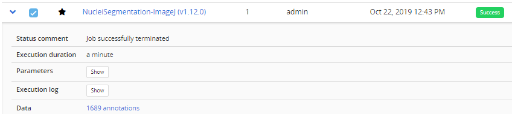
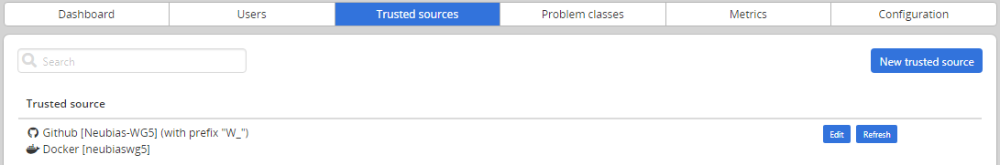
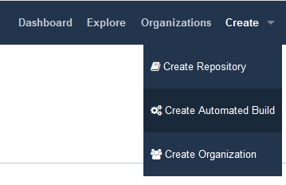
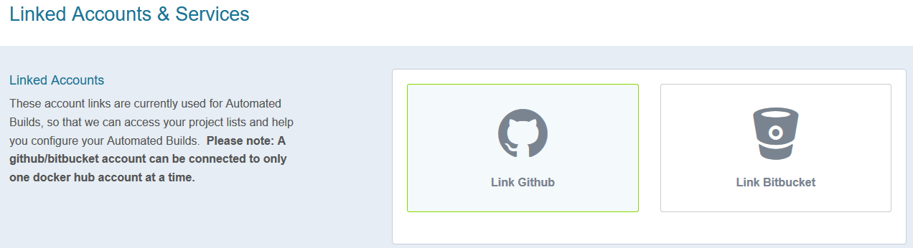
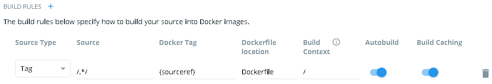

1. Uploading a new workflow descriptor to BIAFLOWS
Workflows have first to be described through a JSON descriptor, e.g.:
https://github.com/Neubias-WG5/W_NucleiSegmentation-ImageJ/blob/master/descriptor.json
Currently, some sections have to be customized manually, and some conventions
must be respected to allow automatic parsing by BIAFLOWS.
We recommend using
https://github.com/Neubias-WG5/W_Template/blob/master/descriptor.json
as template for your JSON descriptor.
Choose a workflow name that does not contain space. The description field
(supporting restricted HTML) should be filled to document the workflow
and it will be displayed from BIAFLOWS UI.
As inputs (workflow parameters), 5 parameters are mandatory:
- cytomine_host
- cytomine_public_key
- cytomine_private_key
- cytomine_id_project
- cytomine_id_software
The fields associated to workflow parameters are described here:
id the parameter name (e.g : ij_radius)value-key a reference for the parameter in the command line.
Keep @ID, which is a shorthand meaning replace by the parameter
id, in uppercase.
In our example, it will be replaced at parsing time by IJ_RADIUS
command-line-flag At execution time, the value-key in the command
line will be
replaced by the command-line-flag followed by the parameter value. Keep --@id.
In our example, it will be replaced in the command line by
--ij_radius.
name a human readable name displayed in BIAFLOWStype Number, String, Booleanoptional set to true only if the workflow execution is not
influenced by the presence or the absence of the parameter
(e.g a verbose parameter).
Workflow parameters having an influence on the results should never be optional.
default-value the default value of the parameter (in BIAFLOWS
interface).
Do not forget to update the command line, with the parameter value keys.
For instance, for workflow parameters ij_radius and ij_threshold
python wrapper.py CYTOMINE_HOST CYTOMINE_PUBLIC_KEY CYTOMINE_PRIVATE_KEY \
CYTOMINE_ID_PROJECT CYTOMINE_ID_SOFTWARE IJ_RADIUS IJ_THRESHOLD
To make a workflow available from a BIAFLOWS instance, it is currently required to
publish its descriptor using Cytomine Python client. This can be performed by
running the following Python code inside the folder holding the JSON descriptor
you have created:
from cytomine import Cytomine
from cytomine.utilities.descriptor_reader import read_descriptor
with Cytomine(host, public_key, private_key) as c:
read_descriptor("descriptor.json")
host is the url of your BIAFLOWS server, e.g.
https://biaflows.neubias.org,
public_key and private_key can be found from user
Account page (section API KEYS).

2. Linking a new workflow to a BIAFLOWS project
- From Problems, select the problem to which you want to add the workflow
- Go to Problems > Configuration > Workflows and enable the workflow
For now, as the workflow has been added manually, it will be referenced as Not
Runnable and no version information will be provided from the UI.

Next, Go to Projects > Configuration and make sure that Jobs tab is activated (green)
3. Creating the Dockerfile
Docker files specify the execution environment.
They typically start by creating (FROM) a layer from an existing Docker
image with basic operating system. Then they execute commands (RUN)
to install specific software and libraries, and copy (ADD) files
(e.g. the Python wrapper script and workflow script) into the execution
environment the workflow will be called from. Finally, the ENTRYPOINT
is set to the wrapper script.
A sample DockerFile is available here:
https://github.com/Neubias-WG5/W_NucleiSegmentation-ImageJ/blob/master/Dockerfile
If you do not know how to configure the Dockerfile, it is recommended to adapt the
Dockerfile from an existing BIAFLOWS workflow using the same target software
(e.g. an ImageJ macro).
If you create a Dockerfile from scratch, always use the most accurate
tag when referring to an existing Docker image
(e.g. prefer python:3.6.9-stretch over python:3.6).
If the tag is not accurate, the underlying docker image could change
over time, heavily impairing reproducibility!
4.Creating the wrapper script
It is recommended to adapt a wrapper script:
- from same problem class
- processing image of same dimensionality (e.g. 3D)
- matching the software you are planning to use (e.g. ImageJ macro).
In this case, only the workflow call (command line) needs to be adapted.
A sample wrapper script is available here:
https://github.com/Neubias-WG5/W_NucleiSegmentation-ImageJ/blob/master/wrapper.py
The flag is_2 should be used to specify if the images are
strictly 2D or multidimensional.
5. Building the workflow image, running it in a local container and debugging
A new workflow can be directly pushed to GitHub and be built in DockerHub,
but it is preferable to test it locally beforehand. For this,
it is required to build and run the Docker image locally:
Building the container (you need at least around 5GB disk space for this operation)
From a directory where you gathered the 4 files required to describe the workflow:
cd ~/Documents/Code/NEUBIAS/W_NucleiSegmentation-ImageJ
sudo docker build -t seg2d .
Here
seg2d is the name of the Docker image to build locally.
Running the Docker image
TODO CORRECT THAT WITH software_id/workflow_id and project_id/problem_id
sudo docker run -it seg2d --host host --public_key public_key --private_key private_key --software_id workflow_id --project_id problem_id --ij_threshold 15 --ij_radius 4
The list of command-line parameters should exactly match the parameters
defined in the JSON descriptor file. BIAFLOWS instance URL and credentials
should also be filled, as well as valid workflow_id (using --software_id)
and problem_id (using --projet_id).
These IDs can be retrieved from the URL bar while respectively clicking on a
problem (from BIAFLOWS Problems tab) and on a workflow (from BIAFLOWS Workflows tab):

In this example, workflow_id is 23771763.

In this example, problem_id is 5955.
So in our example it will be:
sudo docker run -it seg2d --host host --public_key public_key --private_key private_key --software_id 23771763 --project_id 5955 --ij_threshold 15 --ij_radius 4
If a workflow fails at execution this is reported in Workflow runs section.
Some Execution log information can be downloaded by expanding a workflow run from the blue arrow
.

In this case, no associated benchmark metric is associated to this run.
There is hence no risk that this would be left unnoticed by the user.
For debugging, Docker can be run with an interactive session:
sudo docker run --entrypoint bash -it seg2d
If needed, it is also possible to launch the Docker with X enabled,
e.g. to debug ImageJ macro more easily by adding the option
-e DISPLAY=$DISPLAY -v /tmp/.X11-unix:/tmp/.X11-unix
xhost + sudo docker run --entrypoint bash -e DISPLAY=$DISPLAY -v /tmp/.X11-unix:/tmp/.X11-unix -it seg2d
If you want to access local images without having to download them each time from
BIAFLOWS, you can also attach a local folder to a folder inside the Docker
container (-v option), for instance:
sudo docker run --entrypoint bash -v /home/yourusername/tmp/test:/data -it seg2d
Some other useful Docker commands
- Check if an image is running:
ps -a
- Remove a running container:
sudo docker rm CONTAINER_ID
- Remove all running containers:
sudo docker rm $(sudo docker ps -a -q)
- Download a specific container
sudo docker pull neubiaswg5/fiji-base:latest
To download a recently updated workflow image, it is necessary to first
remove older versions manually.
6. Title
Task
Once your workflow is running properly, you can officially publish it with
version control.
To allow automatic import to BIAFLOWS, the set of files previously
described should be stored in a GitHub repository (linked to DockerHub)
from an account trusted by the target BIAFLOWS instance.
The Github repository name must be given by {prefix}{workflow_name}
{prefix} is an optional prefix for the trusted source
(see Installing and populating BIAFLOWS locally){workflow_name} is the name of the workflow as given in
the name field in the JSON descriptor (see
Step 1).
For instance, for a trusted source with a prefix W_: W_NucleiSegmentation-ImageJ.
Adding/editing trusted sources is performed from Admin / Trusted sources
(Installing and populating BIAFLOWS locally).

7. Linking a GitHub repository to DockerHub (only once)
We assume that you created a trusted GitHub organization (e.g. neubias-wg5)
and a workflow repository holding the 4 workflows files.
It is now required to link DockerHub to GitHub. Fortunately,
this operation has to be performed only once for a given GitHub organization:
- Create an account on DockerHub : https://hub.docker.com/ and login
- Create an automatic build by linking Docker account to GitHub organization account
- On DockerHub website, click on Create > Create Automated Build

- In Linked Accounts, click on Link Github

- Click Select
- Ensure that Organization access (e.g. Neubias-WG5) is selected
(green check mark) and click on Authorize docker
- Enter your GitHub password to enable access
8. Associating a new workflow repository to DockerHub
Once your GitHub organization account and DockerHub are linked,
it is possible to create an automated build procedure for each workflow.
This procedure will build a workflow Docker image each time a new release
is triggered from a GitHub workflow repository. This image is automatically
downloaded by the BIAFLOWS instance and the new workflow version will be
available for the target problem.
To do so, from DockerHub:
- Click on Create > Create Repository+
- In build settings click on GitHub icon
- Select organization (e.g. neubiaswg5) and workflow Github repository
(e.g. W_NucleiSegmentation-ImageJ) at the bottom of the page
- Choose the Docker registry repository name. In practice,
keep the same as Github repository (DockerHub will convert
uppercase letters into lowercase).
- Enter a short description (less than 100 characters) and click Create
- Click on Click here to customize the build settings and configure as in figure below
- Click on Save

The DockerHub repository name must be reflected in the JSON descriptor
image = {dockerhub_organization}/{github_repo_name.toLowerCase()}
container-image:
{
image: "neubiaswg5/w_nucleisegmentation-imagej",
type: "singularity"
},
9. Creating a versioned release on GitHub
To create versioned releases of the workflow, go to GitHub and draft a new release
(see doc).
This will add a new tag to the last commit.
As we configured automatic build in previous step, a new Docker image will be built
and published with the same tag. BIAFLOWS instances trusting this GitHub / DockerHub
repository will now automatically fetch and make this new version available from the
UI (possibly tis may take up to 5/10 minutes).